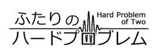

|  | |||
| Genre | Volume | Upload | History |
| ウジウジ系ソフト百合 落ち物ロボットSF |
約20万字(予定) | 2013/03/24 | GitHub |
| 不登校の大学5年生、青山希海はひょんなことからアンドロイドの少女を預かることになる。しかも、どうやらその子は記憶喪失らしい。はたして少女の記憶は戻るのか？ 希海は大学へ行けるのか？ みたいなお話です。現在1話～4話まで書きました。全6話構成。 | |||
| Appendix | coming later | ||
| 小説家になろう | |||
| Title | Genre | Volume | Upload | Last Update | Appendix |
| 裏返った虹 | SF系ローファンタジー二題噺 | 3,900字 | 2013/03/24 | 2013/03/24 | |
| 少年と二人の まとまらない色々 |
日常系説明書SF | 12,900字 | 2012/12/31 | 2013/01/17 | |
| 超大陸 | 創作モノ青春三題噺 | 4,400字 | 2012/09/14 | 2013/01/17 |